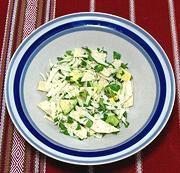

1/2
8
3
2-1/2
2
12
5
1
------
3
1/4
10
8
|
c
oz
cl
oz
T
oz
c
t
----
c
c
5in
oz
|
Corn Kernels (1)
Onion
Garlic
Chipotle Chili
in Adobo Sauce (2)
Olive Oil
Diced Tomatoes (3)
Stock, light (4)
Salt
-- Garnishes
Asedero Cheese (5)
Cilantro, Chopped
Tortillas, Corn
Avocado, ripe

|
|
PREP: - (45 min)
- Quarter ONIONS lengthwise and slice thin crosswise.
- Crush GARLIC and chop medium. Chop CHIPOTLES medium
(keeping their share of the Adobo sauce with them). Mix.
- Heat Olive Oil and fry CORN until it is sizzling well,
then stir in Onions. Fry stirring until onions just start to
color.
- Stir in Chipotle Mix and fry stirring a few minutes, then
stir in Diced Tomatoes and fry stirring a few more minutes.
- Stir in STOCK (or stir into stock) and bring to a simmer for 15
minutes or so. Stir in Salt to taste, then let partially cool.
- Strain part of the liquid out from the solids and run the solids in a
food processor until quite smooth, then stir back into the reserved
liquid.
- Grate CHEESE fairly small, chop CILANTRO medium, cut
TORTILLAS in half, then slice the other way into about 3/8 inch
wide strips, Dice AVOCADO fairly small. Mix all together well.
Note: if making much in advance, cut avocado and mix in
just before serving or it will darken.
RUN: - (10 min)
- Bring Soup back up to a simmer. Check Salt and adjust
consistency to your preference with stock or water.
- Put a generous portion of the Tortilla Strip Mix into each bowl.
Pour Soup over until well covered.
- Serve immediately.
|